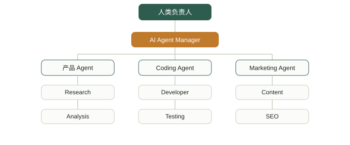

AGI (通用人工智能)
AGI（Artificial General Intelligence，通用人工智能）可以简单理解成：
不是只会做某一件事的 AI，而是具备接近人类「通用认知能力」的人工智能。
现在的 ChatGPT、Claude、Gemini、DeepSeek 等已经表现出很强的通用性，但「它们是不是 AGI」目前仍然没有一个全球统一、可操作的判定标准。

AGI 和现在的 AI 有什么区别？
先看一张最直观的对比表：
| 类型 | 能力特点 | 举例 |
|---|---|---|
| 弱人工智能（ANI） | 专门解决某一类问题 | 推荐算法、AlphaGo、语音识别 |
| 现在的大模型 | 已经具备很强的跨领域能力 | ChatGPT、Claude、Gemini、DeepSeek |
| AGI | 能够像人一样学习、推理、迁移、规划，并独立解决大量陌生问题 | 目前尚无公认实现 |
| ASI | 全面超越人类的超级智能 | 目前属于假设 |
过去的 AI 更像一个专科医生：你让它下棋、识别人脸或推荐商品，它在各自的领域都很强，但通常只擅长特定任务。
而 AGI 更像一个非常聪明的人：你可以让它学习一门新语言、阅读一本陌生的专业书、写程序、分析财务报表、设计产品、做数学推理、操作电脑、制定商业计划、学习一个完全陌生的工具、根据失败结果调整策略，把过去学到的知识迁移到新问题。
它不需要为每个任务都重新训练一个专门模型。
AGI 最核心的其实不是「智商」
很多人把 AGI 理解成「一个比 ChatGPT 聪明很多的聊天机器人」，这个理解不太准确。
AGI 真正重要的是通用性（generality）。
一个 AI 如果数学考试 100 分、编程 100 分，但一遇到没见过的问题就不会了，它不一定是 AGI。
反过来，一个系统如果能够「遇到新问题 → 理解问题 → 获取知识 → 制定方案 → 执行 → 根据结果纠错 → 最终完成任务」，这才更接近 AGI 的核心。
所以 AGI 的关键能力，通常可以概括成一条链：
感知 → 理解 → 推理 → 学习 → 规划 → 执行 → 反馈 → 迁移
其中尤其重要的是学习和迁移能力。
人类最大的优势之一就是迁移学习：会开汽车之后，再学开卡车并不是从零开始，你已经拥有道路规则、方向控制、速度控制、空间感知、风险判断这些基础，所以学新东西会越来越快。
真正的 AGI 也应该具备类似能力。
「通用性」到底通用在哪：智能的六个维度
上一节讲了通用性的重要，但智能本身很难用一个数字衡量。
下面这张雷达图把智能拆成六个维度，对比 2026 年前沿 AI 模型、AGI 目标水平与人类的大致状况：
图 · 六维能力对比示意。数值为便于理解的示意打分（0–10），并非任何机构发布的精确测量结果。
注意红色虚线（AGI 目标）和橙色区域（前沿 AI）之间的差距，主要集中在右半边三个维度：跨领域迁移、自主长期规划、持续学习。
这正是后面「为什么难」一节要展开的拦路虎。
通往 AGI 的路：六十多年的铺垫
「通用人工智能」这个愿景，几乎和「人工智能」这个学科一样古老。
下表梳理了几个公认的关键节点：
| 时间 | 事件 | 意义 |
|---|---|---|
| 1956 | 达特茅斯会议 | 「人工智能」一词正式提出，学者乐观预期几十年内造出通用智能 |
| 1997 | 深蓝战胜卡斯帕罗夫 | 只会下棋的「专才型」AI，能力边界清晰 |
| 2012 | 深度学习登场 | AlexNet 在图像识别上大幅超越传统方法，掀起本轮浪潮 |
| 2016 | AlphaGo 击败李世石 | 强化学习在极高复杂度博弈中找到超越人类直觉的策略 |
| 2017 | Transformer 架构问世 | 注意力机制成为几乎所有大语言模型的底层架构 |
| 2020–2022 | 大语言模型规模化 | GPT-3 展示「规模带来能力涌现」，ChatGPT 让公众接触通用型对话 AI |
| 2023–2025 | 多模态与推理模型 | 模型同时理解文字、图像、语音，AI 智能体开始自主完成多步任务 |
| 2026 至今 | 「锯齿状智能」现状 | 能解复杂科研题，却常在简单现实任务上出错 |
「锯齿状智能」（jagged intelligence）是当前最典型的特征：能力分布极不均衡，某方面远超人类、另一方面却连常识都欠缺。
为什么现在的大模型看起来已经很像 AGI？
这是现在最有意思的地方。
早期的 AI 基本是「一个模型对应一个任务」，但大模型出现后，情况发生了巨大变化：一个模型可以同时写代码、写文章、翻译、做数学、总结、推理、看图、调用工具。
比如现在的模型已经可以走通这样一条完整链路：
这已经和传统意义上的「专用 AI」完全不同。
所以现在很多人认为，我们可能已经进入了 AGI 的早期阶段。
但问题在于：「像 AGI」不等于「已经是 AGI」。
AGI 到底还要多久
这大概是整个领域分歧最大的问题。
行业领袖的公开表态往往乐观且集中在近几年，而研究者群体调查给出的时间普遍更晚、更保守。
下图整理了各方公开表态与调查给出的预估时间区间：
图 · 各方公开表态 / 调查给出的 AGI 预估时间区间整理（截至 2026 年中）。柱状范围具有很强的不确定性和主观性，仅供参考，不代表事实预测。
这些数字都不是「答案」，而是不同方法论下的估计——乐观者按技术路线外推，保守者依据历史规律，还有一部分受行业立场影响。
AGI 真正难的地方是什么？
今天的 AI 已经很强，但离「通用」还差几个关键能力。
第一：可靠性
大模型现在最大的短板之一不是「不会」，而是有时候会非常自信地错。
它会给出一个看起来非常合理、实际上却是错的答案。
AGI 如果要承担真实世界的重要任务，这种错误率必须大幅下降。
第二：长期规划
让 AI 写一个 Python 函数已经很容易，但让它从零开始做一个可以运营 5 年的 SaaS 公司，难度完全不是一个级别。
因为这涉及一整条链路：
这实际上已经从「回答问题」变成了「自主完成任务」。
第三：现实世界交互（具身智能）
今天的 AI 主要生活在数字世界：它可以读网页、写代码、调 API、操作电脑、处理文件。
但现实世界更复杂，比如「去厨房做一道宫保鸡丁」，就需要走完这样一条链：
这涉及机器人、视觉、触觉、空间理解、运动控制等大量问题。
AGI 不一定必须是机器人，但真正进入物理世界会是更大的挑战。
除了上面三个，还有几个同样关键的挑战：
| 挑战 | 说明 |
|---|---|
| 跨领域泛化 | 把在某个任务学到的知识灵活用到全新场景，而不是从零训练 |
| 持续学习 | 在使用中不断积累新知识，避免「学了新的、忘了旧的」灾难性遗忘 |
| 常识推理 | 理解人类无需言明却默认彼此都懂的日常逻辑与物理直觉 |
| 对齐与安全 | 确保能力越来越强的系统始终符合人类意图和价值观 |
| 算力与能耗 | 训练和运行前沿模型需要巨大的计算与电力资源 |
如果 AGI 真的到来：机遇与风险
正因为潜在影响巨大，AGI 才既让人兴奋，也让人警惕。
两面放在一起看：
| 可能带来的机遇 | 需要认真对待的风险 |
|---|---|
| 加速科学研究，缩短新药、新材料的发现周期 | 就业结构被大规模、快速地重塑，带来转型阵痛 |
| 降低教育、医疗咨询等高质量服务的获取门槛 | 系统目标与人类意图出现偏差（对齐问题） |
| 接管重复、危险或繁琐的工作，释放人力 | 能力被滥用于网络攻击、虚假信息或武器化用途 |
| 成为个人和企业的「通用助手」，处理多步任务 | 决策权力过度集中在少数掌握先进系统的机构手中 |
AGI 最重要的变化，可能不是「AI 更聪明」
而是：智能开始变成一种可以规模化复制的生产要素。
过去一个企业招聘一个程序员，和未来用一个 AI Agent，经济学意义完全不同：
| 过去的做法 | 未来可能的做法 |
|---|---|
| 1 个程序员 | 1 个 AI Agent |
| 1 份工资 | 24 小时运行 |
| 8 小时 / 天 | 同时处理几十个任务 |
| 有限产能 | 可以复制、可以并行 |
所以现在真正值得关注的，其实不是「AI 会不会取代程序员」这个老问题，而是一个更尖锐的新问题：
一个人未来究竟能够管理多少 AI？
AGI 可能真正改变「公司」的组织方式
传统公司的结构，是一个老板下面挂着一排部门：

未来则可能变成：一个人负责少量 AI，再由 AI 管着一群执行 Agent。

在这种结构里，人负责目标、判断、资源和最终决策，AI 负责大量执行。
所以未来真正稀缺的，可能不再是「会不会写代码」，而是能不能定义正确的问题、判断 AI 的结果，并把多个 AI 组织起来完成复杂任务。
这也是近几年出现 AI Agent、AI Application Engineer、FDE、Context Engineer、AI Builder 等新岗位的原因。
AGI ≠ AI Agent
这两个概念很容易混淆。
AGI 是能力层面的概念，而 Agent 是系统形态。
可以这样理解：大模型具备推理能力之后，再加上工具、记忆、环境感知、规划、执行这些能力，就构成了一个 AI Agent。
而 AGI，更接近「足够强的通用智能」。
Agent 不一定需要 AGI——现在就已经可以构建很多 Agent。
同样，AGI 也不一定必须表现为 Agent——它可以只是一个具备高度通用认知能力的智能系统。
那么现在到底有没有 AGI？
目前没有一个公认答案。
关键问题是：AGI 到底应该达到什么标准？
如果标准是「能够完成大多数知识工作」，今天的一些顶级模型已经非常接近；如果标准是「像一个正常成年人一样，在完全陌生环境中自主学习并完成各种长期任务」，距离就明显更远。
所以 AGI 更像是一条连续的光谱，而不是一个突然亮起的开关：
现实世界很可能不会出现某一天「今天 10:00，AGI 正式诞生」。
更可能是 AI 的通用能力一点点提高，直到某个阶段，人类发现它已经能独立完成大量过去只有人才能完成的复杂工作——这才是 AGI 真正意义上的到来。
关于 AGI 的常见问题
以下是初学者最容易混淆的几个问题。
ChatGPT 这类大模型算是 AGI 吗？
目前主流观点认为还不算。
它们在语言类任务上表现惊艳，但在长期规划、持续学习、真正的常识推理等方面仍有明显短板，能力分布并不均衡。
AGI 等于机器人有了自我意识吗？
不等于。
AGI 讨论的是「通用认知能力」，而「意识」是一个更模糊、更偏哲学的概念，两者不是一回事，也不必然一起出现。
为什么不同专家给出的时间差这么多？
一部分原因是对「什么才算 AGI」没有统一定义和测试标准。
另一部分是每个人依据的方法不同：有人按技术路线外推，有人依据历史规律，还有人受行业立场影响。
普通人现在需要为 AGI 做什么准备吗？
比起焦虑一个不确定的时间点，更实际的做法是持续关注 AI 能力的边界、学会与现有工具协作，并对相关政策与社会讨论保持基本了解。
用一句话理解 AGI
把不同的智能形态放在一起，区别会更清楚：
| 形态 | 一句话比喻 |
|---|---|
| 传统 AI | 一个工具 |
| 现在的大模型 | 一个非常聪明的助手 |
| AI Agent | 一个能够自己干活的数字员工 |
| AGI | 一个能面对陌生问题，自主学习、推理、规划、执行和纠错的通用智能体 |
而再往后一步，如果这种智能在绝大多数认知领域都全面超过人类，那讨论的就不再只是 AGI，而是 ASI（Artificial Superintelligence，人工超级智能）。
真正值得关注的，其实不是「AGI 什么时候出现」这个日期，而是：当 AI 的通用能力不断逼近人类时，哪些工作、公司和个人能力会首先被重新定价。

点我分享笔记